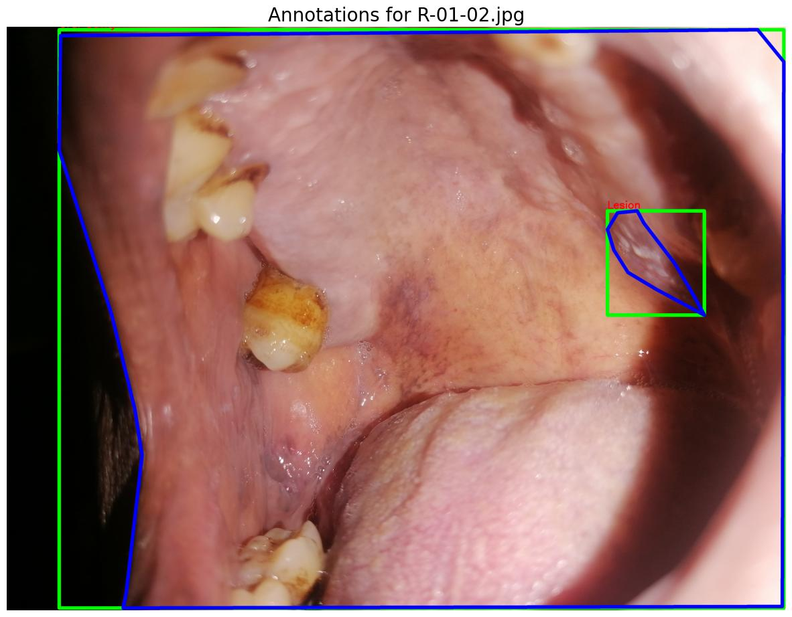

AI-Driven Classification for Specialized Oral Informatics
Undergraduate Researcher
Guide: Prof. Nirmal Punjabi, KCHD | Indian Institute of Technology Bombay

Project Overview
During my tenure as an Undergraduate Researcher at IIT Bombay, I focused on addressing automated diagnostic challenges within medical imaging. The primary objective was to develop a robust, deep learning-based diagnostic tool capable of accurately segmenting and classifying specialized oral diseases from visual data, ultimately aiding in faster and more reliable medical informatics.
Technical Implementation
To handle the complexities and strict accuracy requirements of medical image classification, I architected an end-to-end deep learning pipeline focused on robust feature extraction and balanced data handling:
- Deep Learning Architecture (ResNet101): Leveraged transfer learning by building upon a deep ResNet101 architecture. This allowed the model to utilize pre-trained weights to extract highly complex, hierarchical visual features from the medical images without needing to train a massive network entirely from scratch.
- Data Pipeline & Stratification: Medical datasets often suffer from severe class imbalances. To solve this, I developed a complete training and evaluation pipeline using TensorFlow and Keras. I integrated data loading with Pandas and utilized Scikit-learn to enforce stratified data splitting, ensuring that rare disease classes maintained a proportional and balanced representation during model training.
- Integrated Data Augmentation: To prevent the model from overfitting to the limited medical dataset and to enhance its ability to generalize to unseen patient data, I engineered custom data augmentation strategies and integrated them directly into the model's architecture using Keras preprocessing layers.
System Output & Impact
The resulting pipeline provided a highly scalable and stable solution for oral disease classification. By combining the deep feature extraction of ResNet101 with rigorously balanced data handling and augmentation, the model achieved reliable multi-class classification, demonstrating the viability of advanced deep learning architectures in specialized medical diagnostic environments.